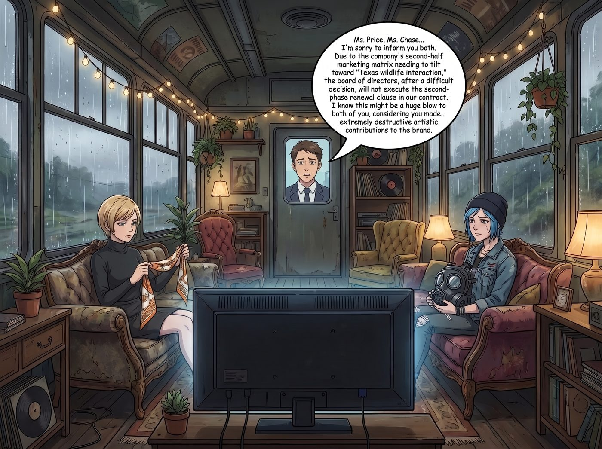
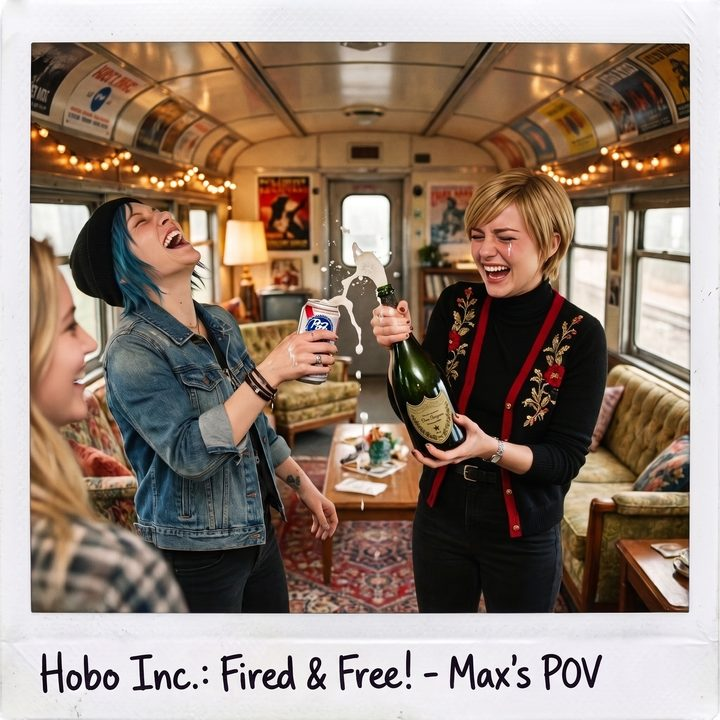

退休快樂


網際網路的記憶，比普吉特海灣的退潮還要快。
就在「防毒面具怪客與口罩駭客」的廣告牌掛上第五大道的第三個月，演算法的浪潮無情地轉向了下一個爆點。全美年輕人的注意力，迅速被一個「穿著芭蕾舞裙在鱷魚池裡喝康普茶」的德州小伙子給吸走了。
保溫杯的銷量在經歷了最初的狂飆後，逐漸回歸平淡。對於品牌方來說，二號車廂這兩個「反消費主義刺頭」的邊際效益已經遞減到了極限。
於是，在一個下著小雨的週二下午，二號車廂的大螢幕再次亮起。
那個曾經把她們當成救世主的年輕 CMO，此刻在螢幕那頭面露難色，語氣裡充滿了公關式的委婉與歉意： 「Price 小姐，Chase 小姐……很抱歉通知兩位。由於公司下半年的行銷矩陣需要向『德州野生動物互動』方向傾斜，董事會經過艱難的決定，將不執行我們合約中的第二期續約條款。我知道這對兩位來說可能是個巨大的打擊，畢竟妳們為品牌付出了……極具破壞性的藝術貢獻。」
螢幕這頭，一場足以拿下奧斯卡最佳女主角的飆戲正在上演。
Victoria 穿著一件黑色的高領毛衣，手裡捏著一張愛馬仕的絲巾，眼眶微紅，用一種極度破碎、彷彿剛剛失去了整個家族信託的顫抖聲音說道： 「我明白的……在這個冷酷的資本世界裡，真心總是會被拋棄。我只是……我只是有點捨不得那些我們一起對抗世俗的日子。祝你們的鱷魚好運。」
說完，她甚至戲劇性地偏過頭，用絲巾輕輕按了按眼角，彷彿在掩飾即將落下的淚水。
而坐在她旁邊的 Chloe，則將那個沉重的 SAS 防毒面具抱在懷裡，像是在撫摸一具戰友的屍體。她低下頭，聲音沙啞而沉痛： 「你們剝奪了一個藍領工人唯一的藝術發聲管道。我以為我們是在改變世界，沒想到我們只是你們報表上的一串數字。這很酷，這真的很酷……去他媽的資本主義。」
螢幕那頭的 CMO 被這兩人極致的「破碎感」和「控訴」搞得愧疚萬分。他甚至紅了眼眶，不停地在胸口畫著十字道歉：「真的很抱歉！妳們永遠是我們品牌歷史上最耀眼的流星！預付款我們絕對不會追回！再見，兩位藝術家！」
「再見……」Victoria 氣若游絲地揮了揮手。
「滴。」
工作站前的 Lily，用一根手指，精準而冷酷地按下了鍵盤上的「結束通話」快捷鍵。
大螢幕瞬間變黑。
車廂裡維持了零點五秒的死寂。
「哈哈哈哈哈哈！！！」
「終於滾蛋了！！！」
就在螢幕熄滅的瞬間，Victoria 臉上的「悲傷」猶如按了切換鍵一樣瞬間消失。她一把將那張擦眼角用的絲巾扔到了半空中，爆發出了一陣極度狂野的、毫無名媛包袱的尖叫。
「老娘終於不用再戴那個散發著消毒水味的廉價破口罩了！！」Victoria 衝到垃圾桶旁，將那盒 CVS 買來的藍色口罩連同劣質蛤蟆鏡一起，狠狠地砸了進去。
「去你的保溫杯！去你的純粹自然之美！」
Chloe 更是直接從沙發上一躍而起，把那個見鬼的防毒面具像踢足球一樣，一腳踢到了車廂的最角落。她衝到冰箱前，一把拉開門，直接徒手捏爆了一罐廉價啤酒的拉環。
「實習生！告訴我尾款怎麼樣了？！」Chloe 舉著噴灑著泡沫的啤酒，興奮地大吼。
Lily 沒有參與狂歡，但她推眼鏡的動作裡透著一種行政級別的愉悅：「報告 Chloe 學姐。就在剛才通話的最後十秒鐘，對方為了彌補『道德愧疚感』，提前將合約終止的補償金 25,000 美元打入了營地帳戶。目前資金已清算完畢。」
Lily 的手指在鍵盤上飛速敲擊了幾下：「同時，我已經啟動了『數位抹除協議』。我們在各大平台的官方帳號已註銷，所有影片均已下架。從現在起，網路上再也沒有『泥巴土撥鼠』和『防毒面具怪客』，只剩下無人認領的都市傳說。」
「幹得漂亮，黑魔法師！」
Victoria 興奮地打開了她那個高定貨櫃，從裡面抱出了一支一直捨不得喝的、年份極佳的唐培里儂（Dom Pérignon）香檳，「砰」的一聲拔開了軟木塞。
這是一個極度魔幻且充滿反差的慶功宴。
左邊是 Chloe 舉著 2 塊錢一罐的廉價 PBR 啤酒，右邊是 Victoria 端著 300 塊美金一瓶的頂級香檳。兩個幾分鐘前還在螢幕前「痛不欲生」的過氣網紅，此刻在二號車廂裡互相碰撞著酒杯，慶祝她們終於被資本市場無情地「拋棄」了。
「為過氣乾杯！」Chloe 大笑著將啤酒一飲而盡。
「為我們終於找回了隱私和尊嚴乾杯！」Victoria 優雅地抿了一口香檳，眼角因為高興而笑出了淚花。
Kate 從廚房裡端出了一個剛剛烤好的、上面用糖霜寫著「Happy Retirement（退休快樂）」的巨大巧克力蛋糕，溫柔地笑著說：「太好了，我一直很擔心那個防毒面具會影響 Chloe 的呼吸道。現在我們終於可以回到平靜的生活了。」
Max 靠在工作站旁，看著這群因為「失業」而狂歡的室友，笑得肩膀直抖。
這就是「流浪漢股份有限公司」最真實的樣子：她們可以為了生存向世界妥協一秒鐘，但只要錢一到帳，她們會立刻把世俗的規則連同虛假的眼淚一起扔進垃圾桶。
Max 舉起寶麗來相機，對著正在用香檳和啤酒互相噴灑的 Victoria 與 Chloe，按下了快門。
相紙緩緩吐出。Max 咬著筆蓋，在背面寫下： 『規則第 88 條：世界上最精湛的演技，不是在舞台上惹人落淚，而是在金主爸爸面前裝作悲痛欲絕，然後在螢幕熄滅的瞬間開香檳狂歡。十五分鐘的成名時間結束了，我們帶著滿滿的帳戶餘額，重新遁入了阿卡迪亞灣的地下世界。完美收官。』